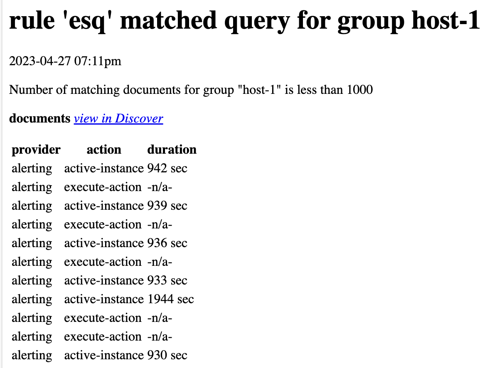

Rule action variables
editAlerting rules can use the Mustache template syntax
({{variable name}}) to pass values when the actions run.
Common variables
editThe available variables differ by rule type, however there are some common variables:
Some cases exist where the variable values will be "escaped" when used in a context where escaping is needed. For example:
-
For the email connector, the
messageaction configuration property escapes any characters that would be interpreted as Markdown. -
For the Slack connector, the
messageaction configuration property escapes any characters that would be interpreted as Slack Markdown. -
For the Webhook connector, the
bodyaction configuration property escapes any characters that are invalid in JSON string values.
Mustache also supports "triple braces" of the form {{{variable name}}}, which indicates no escaping should be done at all. Use this form with caution, since it could end up rendering the variable content such that the resulting parameter is invalid or formatted incorrectly.
General
editAll rule types pass the following variables:
-
date - The date the rule scheduled the action, in ISO format.
-
kibanaBaseUrl -
The configured
server.publicBaseUrl. If not configured, this will be empty. -
rule.id - The rule identifier.
-
rule.name - The rule name.
-
rule.params - The rule parameters, which vary by rule type.
-
rule.spaceId - The space identifier for the rule.
-
rule.tags - The list of tags applied to the rule.
-
rule.url -
The URL for the rule that generated the alert. This will be an empty string if the
server.publicBaseUrlsetting is not configured.
Action frequency: Summary of alerts
editIf the rule’s action frequency is a summary of alerts, it passes the following variables:
-
alerts.all.count - The count of all alerts.
-
alerts.all.data -
An array of objects for all alerts. The following object properties are examples; it is not a comprehensive list.
Properties of the alerts.all.data objects
-
kibana.alert.end - Datetime stamp of alert end. [preview] This functionality is in technical preview and may be changed or removed in a future release. Elastic will work to fix any issues, but features in technical preview are not subject to the support SLA of official GA features.
-
kibana.alert.flapping - A flag on the alert that indicates whether the alert status is changing repeatedly. [preview] This functionality is in technical preview and may be changed or removed in a future release. Elastic will work to fix any issues, but features in technical preview are not subject to the support SLA of official GA features.
-
kibana.alert.instance.id - ID of the source that generates the alert. [preview] This functionality is in technical preview and may be changed or removed in a future release. Elastic will work to fix any issues, but features in technical preview are not subject to the support SLA of official GA features.
-
kibana.alert.reason - The reason of the alert (generated with the rule conditions). [preview] This functionality is in technical preview and may be changed or removed in a future release. Elastic will work to fix any issues, but features in technical preview are not subject to the support SLA of official GA features.
-
kibana.alert.start - Datetime stamp of alert start. [preview] This functionality is in technical preview and may be changed or removed in a future release. Elastic will work to fix any issues, but features in technical preview are not subject to the support SLA of official GA features.
-
kibana.alert.status - Alert status (for example, active or OK). [preview] This functionality is in technical preview and may be changed or removed in a future release. Elastic will work to fix any issues, but features in technical preview are not subject to the support SLA of official GA features.
-
-
alerts.new.count - The count of new alerts.
-
alerts.new.data -
An array of objects for new alerts. The following object properties are examples; it is not a comprehensive list.
Properties of the alerts.new.data objects
-
kibana.alert.end - Datetime stamp of alert end. [preview] This functionality is in technical preview and may be changed or removed in a future release. Elastic will work to fix any issues, but features in technical preview are not subject to the support SLA of official GA features.
-
kibana.alert.flapping - A flag on the alert that indicates whether the alert status is changing repeatedly. [preview] This functionality is in technical preview and may be changed or removed in a future release. Elastic will work to fix any issues, but features in technical preview are not subject to the support SLA of official GA features.
-
kibana.alert.instance.id - ID of the source that generates the alert. [preview] This functionality is in technical preview and may be changed or removed in a future release. Elastic will work to fix any issues, but features in technical preview are not subject to the support SLA of official GA features.
-
kibana.alert.reason - The reason of the alert (generated with the rule conditions). [preview] This functionality is in technical preview and may be changed or removed in a future release. Elastic will work to fix any issues, but features in technical preview are not subject to the support SLA of official GA features.
-
kibana.alert.start - Datetime stamp of alert start. [preview] This functionality is in technical preview and may be changed or removed in a future release. Elastic will work to fix any issues, but features in technical preview are not subject to the support SLA of official GA features.
-
kibana.alert.status - Alert status (for example, active or OK). [preview] This functionality is in technical preview and may be changed or removed in a future release. Elastic will work to fix any issues, but features in technical preview are not subject to the support SLA of official GA features.
-
-
alerts.ongoing.count - The count of ongoing alerts.
-
alerts.ongoing.data -
An array of objects for ongoing alerts. The following object properties are examples; it is not a comprehensive list.
Properties of the alerts.ongoing.data objects
-
kibana.alert.end - Datetime stamp of alert end. [preview] This functionality is in technical preview and may be changed or removed in a future release. Elastic will work to fix any issues, but features in technical preview are not subject to the support SLA of official GA features.
-
kibana.alert.flapping - A flag on the alert that indicates whether the alert status is changing repeatedly. [preview] This functionality is in technical preview and may be changed or removed in a future release. Elastic will work to fix any issues, but features in technical preview are not subject to the support SLA of official GA features.
-
kibana.alert.instance.id - ID of the source that generates the alert. [preview] This functionality is in technical preview and may be changed or removed in a future release. Elastic will work to fix any issues, but features in technical preview are not subject to the support SLA of official GA features.
-
kibana.alert.reason - The reason of the alert (generated with the rule conditions). [preview] This functionality is in technical preview and may be changed or removed in a future release. Elastic will work to fix any issues, but features in technical preview are not subject to the support SLA of official GA features.
-
kibana.alert.start - Datetime stamp of alert start. [preview] This functionality is in technical preview and may be changed or removed in a future release. Elastic will work to fix any issues, but features in technical preview are not subject to the support SLA of official GA features.
-
kibana.alert.status - Alert status (for example, active or OK). [preview] This functionality is in technical preview and may be changed or removed in a future release. Elastic will work to fix any issues, but features in technical preview are not subject to the support SLA of official GA features.
-
-
alerts.recovered.count - The count of recovered alerts.
-
alerts.recovered.data -
An array of objects for recovered alerts. The following object properties are examples; it is not a comprehensive list.
Properties of the alerts.recovered.data objects
-
kibana.alert.end - Datetime stamp of alert end. [preview] This functionality is in technical preview and may be changed or removed in a future release. Elastic will work to fix any issues, but features in technical preview are not subject to the support SLA of official GA features.
-
kibana.alert.flapping - A flag on the alert that indicates whether the alert status is changing repeatedly. [preview] This functionality is in technical preview and may be changed or removed in a future release. Elastic will work to fix any issues, but features in technical preview are not subject to the support SLA of official GA features.
-
kibana.alert.instance.id - ID of the source that generates the alert. [preview] This functionality is in technical preview and may be changed or removed in a future release. Elastic will work to fix any issues, but features in technical preview are not subject to the support SLA of official GA features.
-
kibana.alert.reason - The reason of the alert (generated with the rule conditions). [preview] This functionality is in technical preview and may be changed or removed in a future release. Elastic will work to fix any issues, but features in technical preview are not subject to the support SLA of official GA features.
-
kibana.alert.start - Datetime stamp of alert start. [preview] This functionality is in technical preview and may be changed or removed in a future release. Elastic will work to fix any issues, but features in technical preview are not subject to the support SLA of official GA features.
-
kibana.alert.status - Alert status (for example, active or OK). [preview] This functionality is in technical preview and may be changed or removed in a future release. Elastic will work to fix any issues, but features in technical preview are not subject to the support SLA of official GA features.
-
Action frequency: For each alert
editIf the rule’s action frequency is not a summary of alerts, it passes the following variables:
-
alert.actionGroup - The ID of the action group of the alert that scheduled the action.
-
alert.actionGroupName - The name of the action group of the alert that scheduled the action.
-
alert.actionSubgroup - The action subgroup of the alert that scheduled the action.
-
alert.consecutiveMatches - The number of consecutive runs that meet the rule conditions.
-
alert.flapping - A flag on the alert that indicates whether the alert status is changing repeatedly.
-
alert.id - The ID of the alert that scheduled the action.
-
alert.uuid - A universally unique identifier for the alert. While the alert is active, the UUID value remains unchanged each time the rule runs. [preview] This functionality is in technical preview and may be changed or removed in a future release. Elastic will work to fix any issues, but features in technical preview are not subject to the support SLA of official GA features.
Context
editIf the rule’s action frequency is not a summary of alerts, the rule defines additional variables as properties of the variable context. For example, if a rule type defines a variable value, it can be used in an action parameter as {{context.value}}.
For diagnostic or exploratory purposes, action variables whose values are objects, such as context, can be referenced directly as variables. The resulting value will be a JSON representation of the object. For example, if an action parameter includes {{context}}, it will expand to the JSON representation of all the variables and values provided by the rule type. To see all alert-specific variables, use {{.}}.
For situations where your rule response returns arrays of data, you can loop through the context:
{{#context}}{{.}}{{/context}}
For example, looping through search result hits:
triggering data was:
{{#context.hits}} - {{_source.message}}
{{/context.hits}}
Enhancing Mustache variables
editThis functionality is in technical preview and may be changed or removed in a future release. Elastic will work to fix any issues, but features in technical preview are not subject to the support SLA of official GA features.
You can enhance the values contained in Mustache variables when the Mustache template is rendered by rendering objects as JSON or by using Mustache lambdas.
Rendering objects as JSON
editSome connectors (such as the Webhook connector) expect JSON values to be passed as parameters when the connector is invoked. The following capabilities are available:
-
Array values referenced in braces have a predefined rendering by Mustache as string versions of the array elements, joined with a comma (
,). To render array values as JSON, access theasJSONproperty of the array, instead of the array directly. For example, given a Mustache variablecontext.valuesthat has the value[1, 4, 9]the Mustache template{{context.values}}will render as1,4,9, and the Mustache template{{context.values.asJSON}}will render as[1,4,9]. - The ParseHjson lambda Mustache lambda makes it easier to create JSON in your templates by using Hjson, a syntax extension to JSON, rather than strict JSON.
Using Mustache lambdas
editMustache lambdas provide additional rendering capabilities for Mustache templates. A Mustache lambda is formatted like a Mustache section. For example:
{{#EvalMath}} round(context.value, 1) {{/EvalMath}}
In that example, the lambda EvalMath is passed the text round(context.value, 1) and renders a rounded value of the context.value variable.
This pattern is used by all the provided Mustache lambdas described in the subsequent sections.
EvalMath
editThe EvalMath lambda will evaluate the text passed to it as TinyMath functions.
For example, when the Mustache variable context.value is 3.1234, the following template will render as 3.1:
{{#EvalMath}} round(context.value, 1) {{/EvalMath}}
This lambda can access Mustache variables without having to wrap them in {{}}.
However, if the value is in a string form (for example, an Elasticsearch numeric field whose source was indexed as a string), or could be escaped, escaping the value with triple quotes should allow this to work.
For example, if the Mustache variable context.value is "3.1234", the following template will render as 3.1:
{{#EvalMath}} round( {{{context.value}}} , 1) {{/EvalMath}}
ParseHjson
editThe ParseHjson lambda provides ease-of-use capabilities when constructing JSON objects. Hjson is a syntax extension to JSON. It has the following features:
- Missing and extra trailing commas are allowed in arrays and objects.
- Comments are supported.
- Property names can be specified without quotes.
- Property values can be specified without quotes (one per line and no commas).
- Multi-line strings have dedent support to remove the leading whitespace.
- Legal JSON documents are supported.
To use it, surround your Hjson content with {{#ParseHjson}}...{{/ParseHjson}}.
For example:
{{#ParseHjson}}
{
# add the rule id and name to the JSON document
ruleId: "{{rule.id}}"
ruleName: "{{rule.name}}"
}
{{/ParseHjson}}
When rendered, this template will generate:
{
"ruleId": "<the rule id is here>",
"ruleName": "<the rule name is here>"
}
FormatDate
editThe FormatDate lambda provides date formatting capabilities. Dates can be formatted in an arbitrary time zone and with an arbitrary format string.
To use it, surround the date and formatting parameters with {{#FormatDate}}...{{/FormatDate}}.
The format of the text passed to the lambda is: <date>; <time zone>; <date format>, where semicolons (;) separate each parameter.
The <date> parameter is required; the <time zone> and <date format> parameters are optional.
The default time zone is "UTC" and the default date format is "YYYY-MM-DD hh:mma".
For example, the following templates all render the same value:
{{#FormatDate}} {{{timestamp}}} {{/FormatDate}}
{{#FormatDate}} {{{timestamp}}} ; UTC {{/FormatDate}}
{{#FormatDate}} {{{timestamp}}} ; UTC; YYYY-MM-DD hh:mma {{/FormatDate}}
{{#FormatDate}} {{{timestamp}}} ; ; YYYY-MM-DD hh:mma {{/FormatDate}}
The <time zone> parameter must be a valid time zone identifier as listed in TZ database time zone names, such as "America/New_York".
The <date format> parameter must be a valid date format string as described in the Moment format() documentation.
For example, the date format "YYYY-MM-DD hh:mma" will render in the following format: "2023-04-24 11:21pm".
The date value itself should usually be referenced with triple braces since some characters in date strings may contain values that are escaped, which would prevent them from being parsed as dates.
FormatNumber
editThe FormatNumber lambda provides number formatting capabilities using the Intl.NumberFormat object.
Numbers can be formatted with the following Intl.NumberFormat options:
-
compactDisplay -
currencyDisplay -
currencySign -
notation -
signDisplay -
unitDisplay -
unit -
useGrouping- but only values true and false -
minimumIntegerDigits -
minimumFractionDigits -
maximumFractionDigits -
minimumSignificantDigits -
maximumSignificantDigits
To use the lambda, surround the number and formatting options with {{#FormatNumber}}...{{/FormatNumber}}.
The format of the text passed to the lambda is: <number>; <locales>; <options>, where semicolons (;) separate each parameter.
The <number> parameter is required; it is the value to be formatted.
The <locales> and <options> parameters are optional, but the semicolons must be provided; the values may be empty strings.
The <locales> parameter is a list of locales separated by commas (,).
The <options> parameter is a list of key value pairs separated by commas (,).
The key value pairs are strings separated by colons (:) where the key is the name of the option and the value is the value of the option.
The default locale is en-US and no options are set by default.
For more information on locale strings, refer to the locales argument documentation from the Intl reference.
The options and values that can be used with them are listed under options in the Intl.NumberFormat() constructor documentation.
For example:
original value: {{{context.value.condition0}}}
formatted value: {{#FormatNumber}}
{{{context.value.condition0}}} ; de-DE ; style: currency, currency: EUR
{{/FormatNumber}}
If the context variable context.value.condition0 has a value of 628.4, it results in the following text:
original value: 628.4
formatted value: 628,40 €
The {{FormatNumber}} and {{EvalMath}} lambdas can be used together to perform calculations on numbers and then format them. For example:
original value: {{{context.value.condition0}}}
formatted value: {{#FormatNumber}}
{{#EvalMath}} {{context.value.condition0}} * 0.1 {{/EvalMath}}
; de-DE ; style: currency, currency: EUR
{{/FormatNumber}}
If the context variable context.value.condition0 has a value of 628.4, it results in the following text:
original value: 628.4
formatted value: 62,84 €
Mustache examples
editThis example demonstrates a Mustache template for an email action sent from an Elasticsearch query rule. The template references the following Mustache variables:
-
date -
context.title -
context.conditions -
context.link -
context.hits[]._source.event.provider -
context.hits[]._source.event.action -
context.hits[]._source.event.duration
For example, if you have data like this available as Mustache variables:
{
"date": "2023-04-27T22:40:34.153Z",
"context": {
"title": "rule 'esq' matched query for group host-2",
"conditions": "Number of matching documents for group \"host-2\" is less than 1000",
"link": "https://example.com/this-will-link-to-Discover",
"hits": [
{
"_source": {
"event": {
"provider": "alerting",
"action": "active-instance",
"duration": "96023000000"
}
}
},
{
"_source": {
"@timestamp": "2023-04-27T22:40:22.251Z",
"event": {
"provider": "alerting",
"action": "execute-action"
}
}
}
]
}
}
You can create the following Mustache template in the email action for your rule:
# {{context.title}}
{{#FormatDate}} {{{date}}} ; America/New_York {{/FormatDate}}
{{context.conditions}}
**documents** _[view in Discover]({{{context.link}}})_
| provider | action | duration |
| -------- | ------ | -------- |
{{#context.hits}}{{#_source.event}}| {{provider}} | {{action}} | {{#duration}}{{#EvalMath}} round( {{{duration}}} / 1000 / 1000 / 1000 ) {{/EvalMath}} sec{{/duration}} {{^duration}}-n/a-{{/duration}} |{{/_source.event}}
{{/context.hits}}
|
Renders the value of the |
|
|
Renders the value of the |
|
|
Shows examples of |
|
|
Shows a table with three columns, with one row per element in the |
When rendered into Markdown and then HTML and viewed in an email client, it looks like this:
